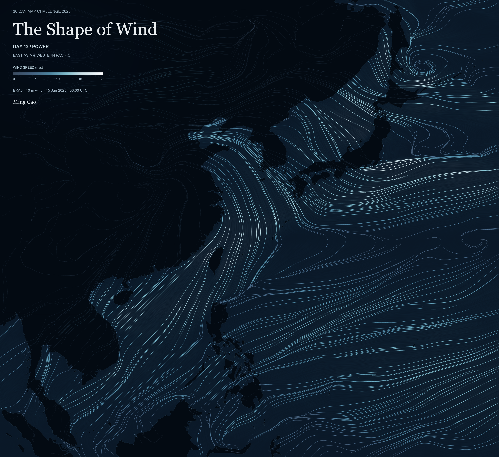
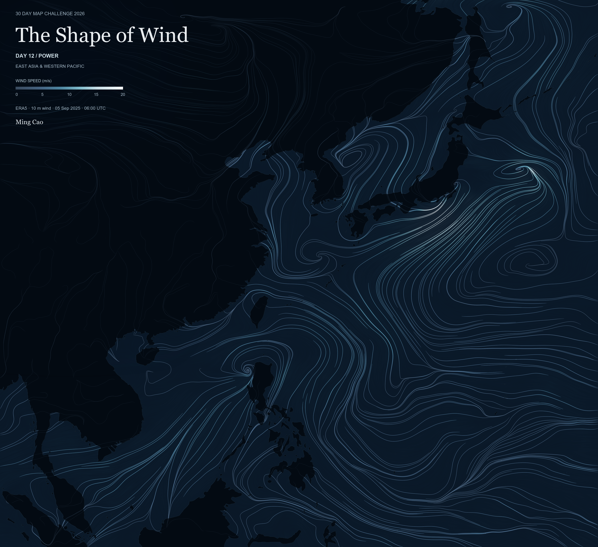

NYC Changing Station Explorer
Finding a changing table shouldn't be a guessing game. NYC Open Data restroom records are mapped by borough and reported placement.
Tools: Python · JavaScript · Leaflet · Playwright
Maps and spatial illustrations by Ming Cao.
12 works · 3 public interactive maps · Day 13 awaiting clearance
Finding a changing table shouldn't be a guessing game. NYC Open Data restroom records are mapped by borough and reported placement.
Tools: Python · JavaScript · Leaflet · Playwright
What does a waterfront walk feel like underfoot? OpenStreetMap paths in Jersey City and Brooklyn are classified by recorded surface and walking-permission tags.
Tools: Python · JavaScript · SVG · Pillow
Three Jersey City parks become small atlases of play, sport, and movement. OpenStreetMap activity polygons and paths are drawn in separate panels with metric scales.
Tools: Python · Pillow · Shapely · pyproj

How close are licensed childcare centers to mapped playgrounds? NJ licensing records and OpenStreetMap places are grouped and linked within a 400 m straight-line threshold.
Tools: Python · Pillow · Shapely
Lower Manhattan unfolds like a handscroll seen from the water. NYC building footprints and roof heights become layered silhouettes, with art-directed parallax in the animation.
Tools: Python · SVG · Pillow
A harbor chart cataloged as possibly dating to 1844 meets modern mapped shorelines. The NYPL scan is aligned to NYC DCP and OpenStreetMap land outlines with a six-parameter affine transform.
Tools: Python · Pillow · Shapely · pyproj
An Open Streets walk with a stroller became an imagined everyday neighborhood around Rittenhouse Square. Real OpenStreetMap street and park geometry anchors illustrated scenes of care, play, and slower movement.
Tools: Python · SVG · Pillow
Taiwan's twenty most common surnames form a schematic landscape. MOI household-registration counts scale the glyphs, while real NOAA ETOPO depth bands frame the island.
Tools: Python · SVG · Pillow
How old are East Asia's UNESCO cultural heritage sites? Official site records and reviewed historical phases drive a component-level map and timeline, keeping formation dates separate from inscription years.
Tools: Python · JavaScript · SVG · Pillow
One character, many readings: “水” becomes a field of water patterns. Academia Sinica Xiaoxuetang records supply initials and finals, encoded by color and categorical wave textures over Natural Earth and NOAA ETOPO geography.
Tools: Python · SVG · Pillow · NumPy


Two ERA5 snapshots catch winter and late-summer wind over East Asia and the western Pacific. RK4 streamlines and animated brightness follow each date's fixed 10 m vector field, with Natural Earth land as context.
Tools: Python · NumPy · Numba · Pillow
Late-evening home-area associations connect the 40th Street area to origins across Philadelphia and beyond. Advan Neighborhood Patterns+ records are mapped by Census Block Group for August and September 2025; scaled associations are not unique visitors.
Tools: R · JavaScript · Leaflet · SVG · Microsoft Edge